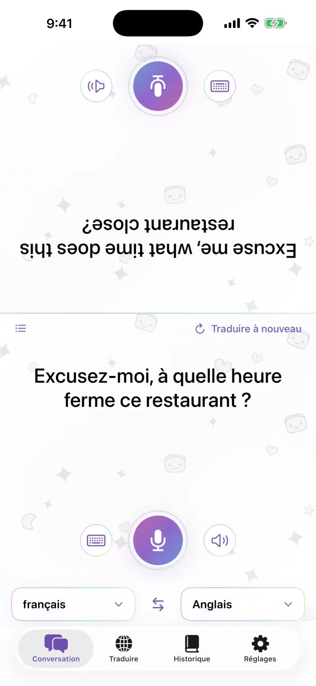
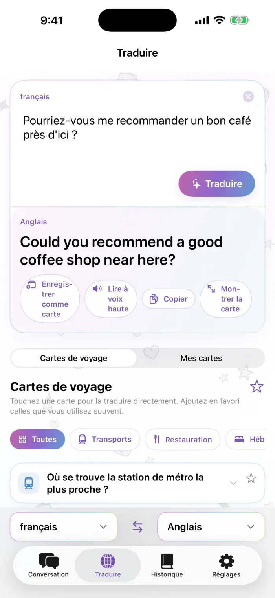
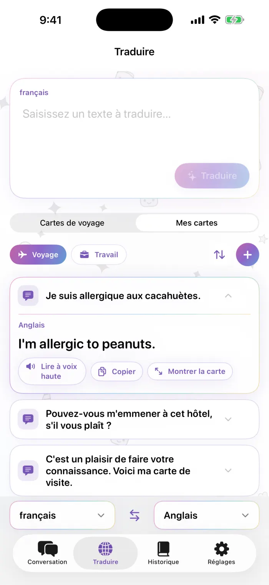
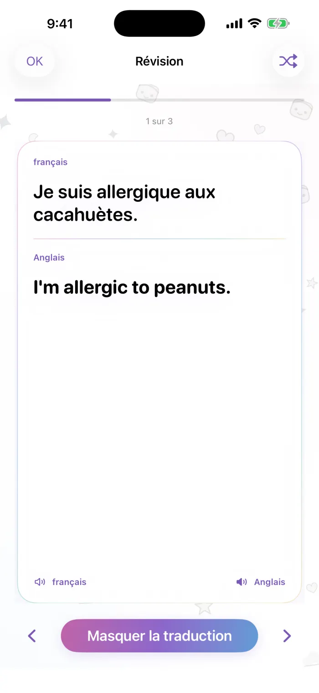

Assistance
Les réponses aux questions les plus fréquentes sur Gelée Traductrice. Si vous ne trouvez pas votre réponse ici, écrivez-nous : nous lisons chaque message.
sona.orbit.hi@gmail.com
Indiquez-nous le modèle de votre iPhone, votre version d’iOS et les deux langues que vous utilisiez.
Questions fréquentes
Comment télécharger une langue ?
Ouvrez l’onglet Réglages de l’app, puis allez dans Langues hors connexion. Les langues déjà présentes sur votre iPhone apparaissent en premier ; touchez Télécharger à côté de la combinaison dont vous avez besoin et suivez les instructions de téléchargement d’Apple. Si la traduction indique qu’il faut d’abord télécharger la combinaison de langues, touchez Télécharger et réessayer.
Est-ce que ça fonctionne hors connexion ?
Oui. Une fois les deux langues d’une combinaison téléchargées, la traduction fonctionne sans connexion internet. Le réseau ne sert qu’à télécharger les langues.
L’app ne m’entend pas. Que faire ?
Gelée Traductrice a besoin d’accéder au Microphone et à la Reconnaissance de la parole. Allez dans Réglages > Confidentialité et sécurité > Microphone, puis dans Réglages > Confidentialité et sécurité > Reconnaissance de la parole, et activez Gelée Traductrice. Certaines langues permettent la saisie au clavier, mais pas la reconnaissance vocale sur tous les appareils.
Les traductions ne sont pas lues à voix haute, ou la voix est absente.
Votre iPhone a besoin d’une voix pour cette langue. Allez dans Réglages > Accessibilité > Contenu énoncé > Voix, choisissez la langue et téléchargez une voix. Vérifiez aussi que le commutateur Sonnerie/Silence et le volume sont bien réglés.
Comment restaurer mon achat sur un nouvel iPhone ?
Connectez-vous avec le même compte Apple, ouvrez l’écran Pro dans l’app et touchez Restaurer les achats.
Comment résilier mon abonnement ?
Les abonnements sont gérés par Apple. Allez dans Réglages, touchez votre nom, puis Abonnements, choisissez Gelée Traductrice et touchez Annuler l’abonnement. Vous conservez Pro jusqu’à la fin de la période en cours.
Combien de cartes personnalisées puis-je créer gratuitement ?
La version gratuite comprend 3 cartes personnalisées. Avec Pro, il n’y a plus de limite : créez autant de cartes et de paquets que vous le souhaitez. Les cartes de voyage intégrées sont toujours gratuites.
Quelles langues sont prises en charge ?
Environ 20 langues, celles que prend en charge Apple pour la traduction sur l’appareil. Les langues déjà téléchargées apparaissent en premier dans la liste.
Pourquoi y a-t-il des publicités, et comment les supprimer ?
La version gratuite affiche une petite bannière en haut de l’écran (dans Conversation, elle reste de votre côté, jamais sur la moitié tournée vers votre interlocuteur). N’importe quelle formule Pro supprime toutes les publicités. Ce que vous dites ou traduisez n’est jamais utilisé à des fins publicitaires.
Où est mon historique ?
Tout ce que vous traduisez est conservé sur votre iPhone. Parcourir, rechercher et réviser votre historique avec des cartes mémoire fait partie de Pro ; en passant à Pro, vous retrouvez tout ce que vous avez déjà traduit.
L’utilisation de Gelée Traductrice est régie par le contrat de licence d’utilisateur final standard d’Apple. https://www.apple.com/legal/internet-services/itunes/dev/stdeula/
Comment fonctionne l’app
De vraies captures de l’app. Les numéros correspondent aux notes à côté de chaque écran.

Conversation
- Le côté de votre interlocuteur, à l’envers pour qu’il puisse lire de l’autre côté de la table
- Touchez le micro pour parler
- Saisissez plutôt votre texte
- Réécouter la traduction
- Choisissez les deux langues ; les flèches au milieu inversent le sens
- Retraduire la dernière phrase après avoir changé de langue
- Passer à l’affichage en liste

Traduire
- Saisissez ce que vous voulez dire
- Traduire
- La traduction
- Enregistrer comme carte, lire à voix haute, copier ou afficher en plein écran
- Passez des cartes de voyage à vos propres cartes

Mes cartes
- Paquets : voyage, travail ou les vôtres
- Organiser : réordonner, supprimer, renommer
- Ajouter une carte
- Touchez une carte pour voir la traduction directement dessus

Révision
- Texte d’origine
- Traduction, révélée d’un toucher
- Afficher ou masquer la traduction
- Carte précédente / suivante (ou balayez)
- Aléatoire